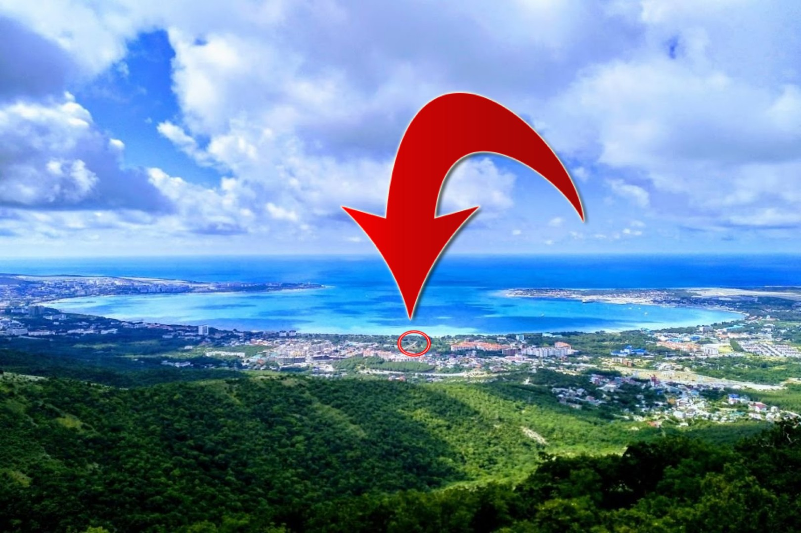

Это просто РАЙСКИЙ УГОЛОК
КОТТЕДЖ
ул. Лазурная,
д. 7а, Геленджик
1 минута до моря
Это частное домовладение,
расположенное на одной из элитных улиц
Геленджика
недалеко от аквапарка "Бегемот".
Здесь у Вас будет
прекрасная возможность
вдыхать запах морского бриза, не покидая
балкона,
ведь мы находимся в минуте ходьбы до моря.
Красавица
набережная, вымощенная тротуарной плиткой,
пляж с водными
аттракционами,
сказочный детский городок "Лукоморье" с горками,
качелями и другими веселыми развлечениями -
все это создаст
незабываемую атмосферу отдыха и
подарит массу ярких и приятных
воспоминаний!
ИДЕАЛЬНОЕ МЕСТОРАСПОЛОЖЕНИЕ
Мы находимся почти в самом центре бухты - это тихий и живописный район на достаточном удалении от шума ночных дискотек. Наша улица расположена в дубовой роще, где тень дубов и близость моря создают в душе умиротворение и комфорт.
1 минута до моря прогулочным
шагом
5 минут до аквапарка "Бегемот"
10 минут до аэропорта на авто
ДЛЯ НАШИХ ГОСТЕЙ
Горячая и холодная вода круглосуточно
Уютный дворик с магнальной зоной
Парковочое место для машины
Бесплатный безлимитный Wi-Fi